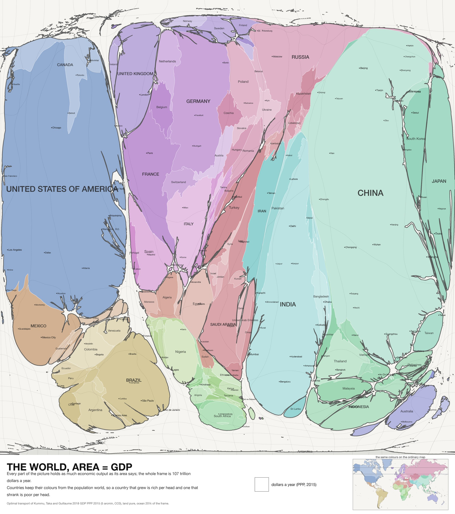
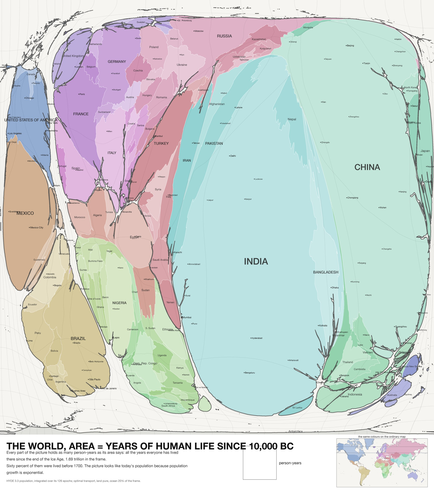
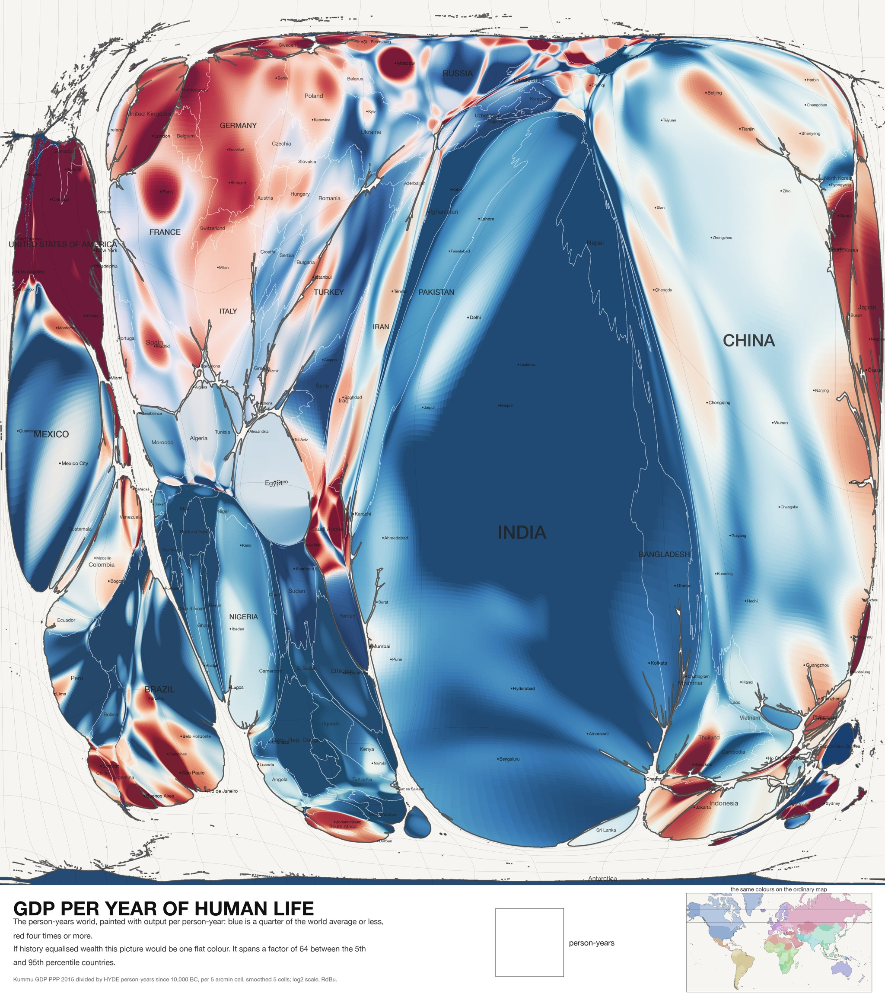
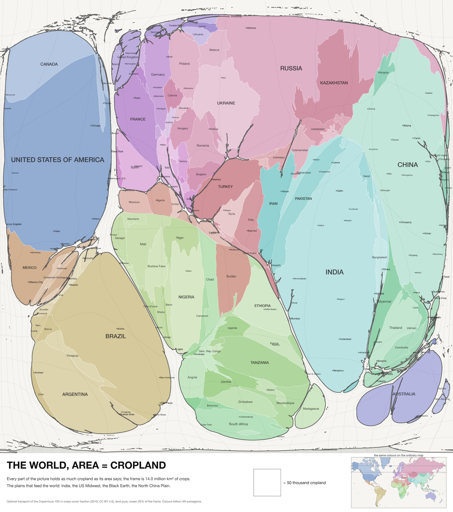

Area = people
Every picture here is the same rectangle stretched so that its area is people: a patch that holds ten million people is always the same size, whether it is Shanghai or Siberia. The stretching is optimal transport, the least total movement that equalises the crowd, so the continents keep their shapes as far as the numbers allow. Nobody has published a population map made this way before.
1. The world today
Reading rule: every part of the picture holds as many people as its area says. Coastlines and borders are drawn where they land. The grey lines are the ordinary 15° graticule, stretched with the land. Land is exact; the ocean keeps a fifth of the frame so the continents keep their gaps.

2. From geography to people
For an optimal-transport map the straight-line interpolation of positions is the shortest path between the two pictures, so every frame of this loop is itself a map.
3. The same rectangle, twelve thousand years
The frame is always full: when there were five million people on Earth each of them had a lot of picture. What changes is who holds it. India and China hold half the rectangle in every century until the twentieth; then Africa starts to grow, and by 2100 (a projection) it holds the largest share of the future.

4. Wealth and the years of human life
Two more measures through the same machine. Area = GDP gives the world of output; area = person-years gives the world of all the years everyone has lived since the end of the Ice Age. They look alike, and the likeness is a trap: both follow today's population, because population growth is exponential and the recent centuries dominate the integral. The honest third picture is the ratio.



5. The non-human world
The same rules with trees and cropland as the measure. The people's world turned inside out: Russia, Canada, Brazil and the Congo grow; India shrinks. Cropland is the plains that feed the world.


Honesty
The deformation is solved on a 4096-cell grid (about 10 km) with 30 km smoothing, so the map equalises population at that scale: a city is inflated as a whole, a block inside it is not. The 100 m data is what is painted on the map and what the zoomable map reads at depth. Densities are within about ±2.5% of exact for 90% of people. HYDE before 1950 is a model; SSP2 after 2025 is a projection. Sources and licences: GHS-POP R2023A (JRC, CC BY 4.0), HYDE 3.3 (PBL), SSP2 grids (Wang, Meng and Long 2022, CC BY 4.0), Kummu et al. 2018 (CC0), Copernicus Global Land Cover (CC BY 4.0), Natural Earth, GHS-UCDB, geoBoundaries. Everything is in the repository, with the experiments gallery behind it.